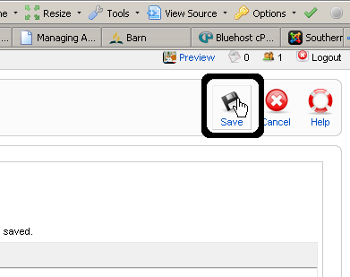

Managing Galleries¶
The photo galleries on the website are handled by a component called “Phoca Gallery.” This software allows for the creation and managing of galleries in a rather simple but powerful manner. To access the phoca gallery component to manage the photos and galleries, select the appropriate section of Phoca Gallery from the Components->Phoca Gallery sub-menu.
Adding/Editing a Gallery¶
- In Phoca Gallery, the photo galleries that show up on the website are actually called “Categories” when creating them in the administrator interface. To access the “Categories” manager, click on Components->Phoca Gallery->Categories. You will then see a list of the current categories you have.
- Once in the “Categories” manager, the next goal is to create a new gallery. This corresponds to creating a new Category, so we will click on “New” in the upper right-hand corner.
- Now, fill out the information for the gallery. All that needs to be filled out here is the name for the gallery (“Title”), but you can provide a description if you would like.
- Next, all that remains is to click on “Save” or “Apply” to create the new Category. If you would like to change any of the information you have entered for the category at a later time, click on the name of the category in the list of categories that can be accessed by going to Components->Phoca Gallery->Categories.
Managing Pictures in a Gallery¶
Once we’ve created our new gallery, we will need to add some pictures to it for it to actually show up on the website (it wouldn’t make much sense to have an empty picture gallery, would it?). This section will show how to add (upload), edit, and delete pictures.
Adding Pictures¶
- We will start by adding some pictures to our gallery (remember that galleries are referred to as “Categories” in Phoca Gallery). First, access the picture manager by clicking on Components->Phoca Gallery->Images.
- Since we will be wanting to add multiple pictures to our gallery, click on “Multiple Add” in the upper right-hand corner.
- Now we will see the “Multiple Add” page of Phoca Gallery. This page includes mechanisms for uploading pictures and organizing them in folders and categories. What we want to do on this page is create a new folder to keep the pictures for our new gallery in, upload the pictures to the folder, and add the pictures to the category we created earlier. We will start by creating the folder to keep the pictures in. Enter the name of the folder in the “Folder” input box down at the bottom of the page and click on “Create Folder.”
- At this point, there should be a folder in the list of folders that we have just created. Now we want to navigate to that folder. To do this, simply click on the name of the folder in the list of folders.
- Once we have navigated to the folder, we need to upload the pictures that we want displayed in the gallery. Click on “Browse” under the “Upload File” section of the Multiple Add page. (Note that pictures can only be up to 3 MB, if you have a picture that is bigger than this use a program such as Irfanview or the GIMP to shrink it).
- After clicking on “Browse” the “File Upload” dialog box will pop up. Select the picture you want in the gallery and click on “Open.”
- After you have selected the picture, click on “Start Upload.”
- Depending on the size of the picture, you may have to wait quite some time for the picture to upload to the server. Make sure you wait until the page refreshes and you get a message that says “Phoca Gallery, Upload complete.”

- Repeat the last four steps for all of the picture that you would like in the gallery.
- After uploading all of the pictures that we want in the gallery, what we want to do next is add them to our gallery (or “Category”). To do this, select the pictures to go into the gallery by clicking on the checkboxes next to the pictures (or click on the checkbox at the top of the column to select all of the pictures in the folder).
- After selecting the pictures, select the gallery to add them to by selecting the appropriate “Category” in the “Category” drop-down box.

- Next, click on “Save” in the upper right-hand corner. After Phoca Gallery creates thumbnails for your pictures they should be ready for viewing in the gallery you created.

Editing Pictures¶
- Once you have added pictures to your gallery, you might want to edit them to change the name or add descriptions to them. To do this, return to the Image manager via Components->Phoca Gallery->Images and click on the “Title” of the picture you wish to edit in the list.
- On the edit image page, make any edits that you wish and click “Save.”
Deleting Pictures¶
- To delete a picture or multiple pictures, select the pictures that you wish to delete from the list. Once you have selected them, click on “Delete” in the upper right-hand corner of the page and confirm that you want to delete the selected items by clicking “OK.”
Deleting a Gallery¶
- To delete an entire gallery, go to Components->Phoca Gallery->Categories. From there select the category or categories (galleries) that you want to delete by clicking on the checkbox(es) next to them. After making the selection click on the “Delete” button in the upper right-hand corner and confirm you want to delete the selected items by clicking “OK.” You may only delete a category if it had no items in it, so make sure that you delete all the pictures in the category first.